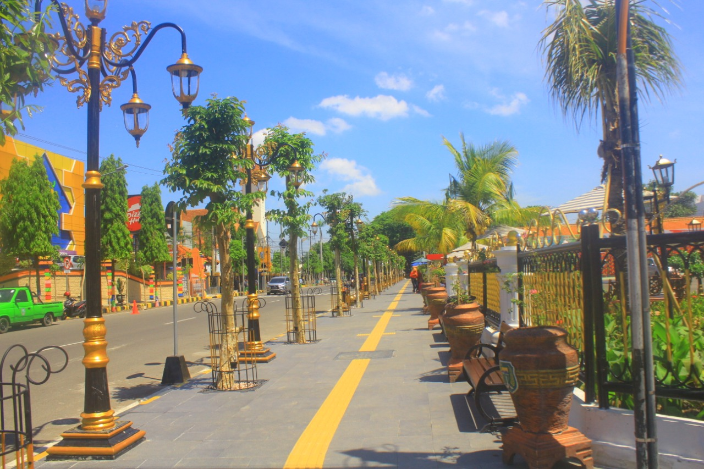

Jalan Pahlawan Madiun Pengunjung Dengan Spot Barunya Rasa Mirip Malioboro Di Yogjakarta

Saat melipir ke Kota Madiun, mungkin teman traveler tak akan luput dari destinasi yang satu ini. Pahlawan Street Center (PSC memang menjadi sebuah kebanggaan tersendiri bagi masyarakat Kota Madiun. Terdapat banyak fasilitas umum yang kini dibangun untuk memanjakan pengunjung.
Sisi alin, Taman Sumber Wangi telah dibangun lorong taman menghubungkan ke Jalan Kalimantan. Di lorong tersebut terdapat banyak sekali fasilitas tempat duduk yang telah dilengkapi dengan stop kontak. Nah cocok banget bagi kamu yang kehabisan baterai handphone. Kerennya lagi, disekitar lorong terdapat sebuah galeri 6 negara yang sekaligus menjual pernak-pernik seputar Kota Madiun. Tak luput pula sebuah kotak telepon klasik seperti diluar negeri yang diletakkan di tiga titik. Kotak pos juga berdiri kokoh dibeberapa titik jalanan seperti depan Bank Mandiri, depan Balaikota Madiun, dan depan Lawu Plaza.